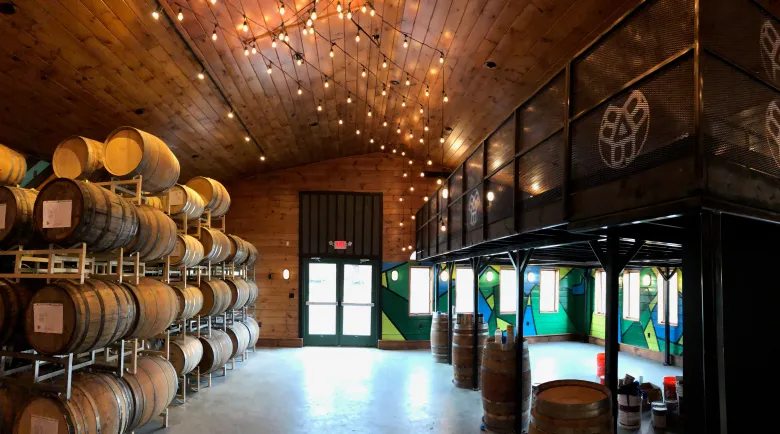
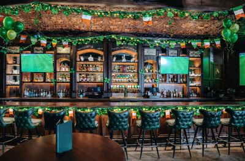

Craft Over Convenience
We never rush a fermentation, never cut a corner, never choose the cheap ingredient when the right one exists. Good beer takes time and we respect that.
Est. 2012 ·Hyderabad, Telangana, India


"We brewed our first batch in Hari Kiran's garage on a Tuesday night. By Wednesday morning half the street had knocked to ask what that incredible smell was."
It started in 2012 when Hari Kiran and Marcus Reid — a former chef and a chemical engineer — discovered they shared the same obsession: the pursuit of the perfect pint. What began as weekend hobby brewing soon became an all-consuming passion that neither could ignore.
After two years of recipe development, 230 failed batches, and one particularly memorable golden ale that earned a standing ovation at a local farmers market, the pair took the leap. They signed a lease on a disused warehouse on hyderabad, Hyderabad, Telangana, India, converted it with their own hands, and Mash & Ale was born.
Today we operate one of California's most respected independent taprooms, a thriving beer club with 8,500 members, and a barrel-aging programme that attracts collectors from across the country. The garage is long gone, but the obsession? Unchanged.
See Our Full TimelineBeer is just the medium. Community, craft, and honesty are the message.
To brew exceptional, honest beer that builds a genuine community — one pint, one conversation, one story at a time.
We never rush a fermentation, never cut a corner, never choose the cheap ingredient when the right one exists. Good beer takes time and we respect that.
85% of our grain is sourced from within 150 miles. Our hop garden produces Centennial and Cascade year-round. Solar panels power 60% of our brew house.
Our taproom is a living room, not a bar. We host free homebrewer meetups, donate 1% of profits to local food banks, and never turn a regular into a stranger.
Every label lists full ingredients, brewing dates, and ABV to two decimal places. You deserve to know exactly what you're drinking. No asterisks. No small print.
We run 12 experimental batches every year. Some fail spectacularly. Some become bestsellers. We believe the willingness to fail is the only path to greatness.
We respect our drinkers enough to brew honestly, our employees enough to pay fairly, and our planet enough to operate responsibly. It's the only way we know.
Every chapter shaped by passion, setbacks, and the relentless search for the perfect pour.
Hari Kiran and Marcus brew their first official batch — a golden ale called First Light — from a 5-gallon kit in Hari Kiran's garage. Neighbours ask for bottles. The seed is planted.
After 230 test batches and one extraordinary farmers market response, the duo sign a lease on Hyderabad, Telangana, India. The entire fit-out is built by hand over eight weekends.
Golden Harvest Ale wins Silver at the California Craft Beer Summit — Mash & Ale's first-ever award. The local press covers it. The weekend queue stretches to the street.
Head Brewer Elena Vasquez joins the team and launches the barrel-aging programme with 12 ex-bourbon casks sourced from Kentucky. The first release sells out in 4 hours.
The Mash & Ale Beer Club opens its doors. 500 charter members sign up in the first week. By year end membership passes 2,000. The loyalty programme redefines craft beer community.
During the pandemic, Mash & Ale pivots to direct delivery and online club events. The team donates 3,000 meals to the local food bank. The community rallies around us — and we rally back.
Taproom doubles in size. A dedicated barrel cellar, private dining room, and outdoor beer garden open. The World Beer Cup awards Gold for the Midnight Obsidian Imperial Stout.
8,500 Beer Club members. 47 recipes in rotation. 12 awards on the wall. A new distillery licence in process. And two founders who still argue over hop schedules every Tuesday morning.
Brewers, dreamers, and passionate perfectionists — united by one goal: making your next pint unforgettable.

Co-founder & Head Brewer
Former professional chef turned obsessive brewer. Hari Kiran drives flavour development and has personally crafted 31 of our 47 recipes. Favourite beer: Golden Harvest Ale.

Co-founder & Operations Director
Chemical engineer by training, hospitality obsessive by nature. Marcus runs every aspect of the operation, from water chemistry to tap maintenance. Favourite beer: Midnight Obsidian Imperial.

Head Brewer & Barrel Programme Lead
Award-winning brewer and Master Cicerone, Elena joined in 2016 and launched our entire barrel-aging collection. Her Midnight Obsidian won the World Beer Cup Gold in 2022.
Community & Events Manager
Priya built the Beer Club from 0 to 8,500 members and produces every event on our calendar. She genuinely knows the names of most of our regulars and their usual order.
We're always on the lookout for passionate people — brewers, hospitality pros, and everything in between.
We're proud of the recognition, but prouder still of the people who inspired us to earn it.
2022
Gold Medal — Imperial Stout
2014
Silver — Golden Ale
2023
98 Points — Barleywine
2021
Bronze — Hazy IPA
2024
#1 West Coast Taproom
2019
Silver — American Amber
★★★★★"This isn't just a brewery — it's a community hub. I moved to Hyderabad, Telangana, India three years ago knowing nobody. I came in on a Tuesday, met the regulars, and never felt like a stranger again."
★★★★★"The Golden Harvest Ale is everything a golden ale should be — and about 40% more. I've been to craft breweries across eight countries and this taproom genuinely stands up with the world's best."
★★★★★"Joined the Beer Club on a whim and now I can't imagine life without those monthly early-release bottles. Worth every single penny."
★★★★★"Hosted my wedding reception here. The staff were incredible and the custom brew they made for us was completely out of this world. We get asked about it at every family gathering."
★★★★★"Elena talked us through the entire barrel program for 20 minutes. The passion from every single person on that team is palpable. The beer proves it."
Every great beer deserves great company. Pull up a stool, order a pint, and let's add another chapter together.
Hyderabad, Telangana, India · Open Daily from 12pm